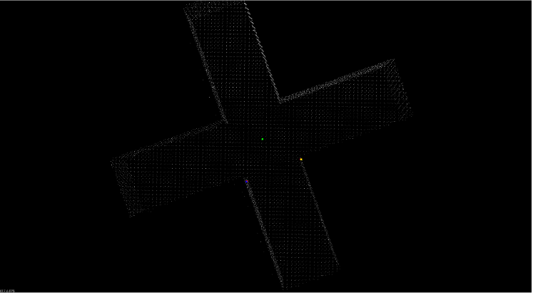
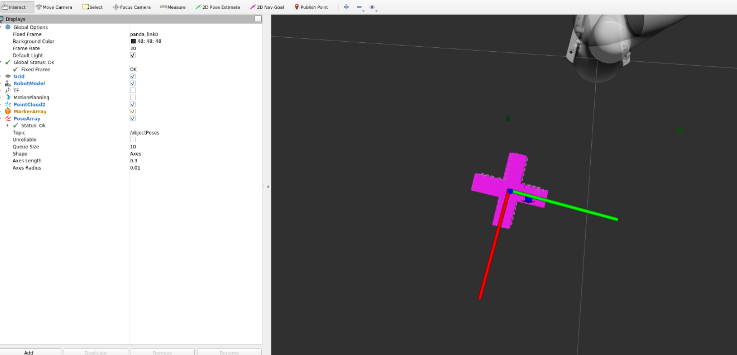
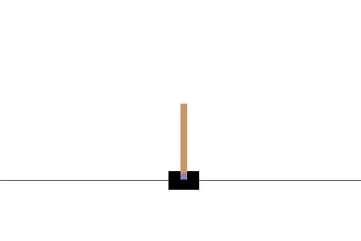
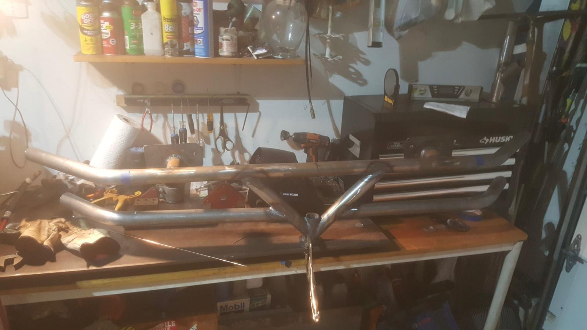
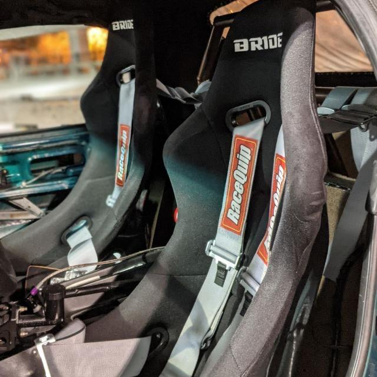

Projects
Decentralised Drone Swarms!
In this project I implemented a complex Laplacian-based controller for a swarm of drones, inspired by a paper I read during my time in an aerial robotics class at UCL.
The algorithm constructs two graphs: one for accessing the drones' velocities and another for shape control. I then formulated a system of ODEs and
integrated it using the fourth-order Runge-Kutta method, allowing for mid-flight formation and scale control.
Link to the paper I used!


Pick and Place
I implemented a custom pipeline to grasp and place square and cross-shaped objects into a box using point cloud data from a depth camera. After clustering to find object centers, I applied corner detection for orientation and used a rotation formula for grasp point calculation. Shape classification was handled via centroid properties. The entire task was executed using the MoveIt library.
 
Cartpole MPC
In this project I used Model Predictive Control (MPC) for the CartPole environment using OpenAI's Gymnasium. The objective is to keep the pole balanced on the cart without it tipping over.
Fabrication Work
These are just some various projects I've worked on in the past, mostly out of my parents' backyard and garage. From learning to MIG weld to making bash bars for my project car with a tube bender, I’ve always enjoyed building things from the ground up.
TIG Welded Bashbar
I made this bashbar for my project car since the bumper was damaged. The car was a trackcar so it could easily be towed from the rear since it would be directly mounted to the frame.
Custom Seat Mounts
In order to put my project car on the track the organizers require atleast a 4 point harness. To do this I had to remove the original seats and make custom seat brackets for the car. I MIG welded the brackets to the floor of the car and made a rollcage to mount the harness onto.
TIG Welded Chopper Exhaust
I fabricated a pass throgh exhaust system for a Honda Shadow. This project turned out quite hard due to the amount of welding to get the bend right. In the end it worked great and sounded amazing!